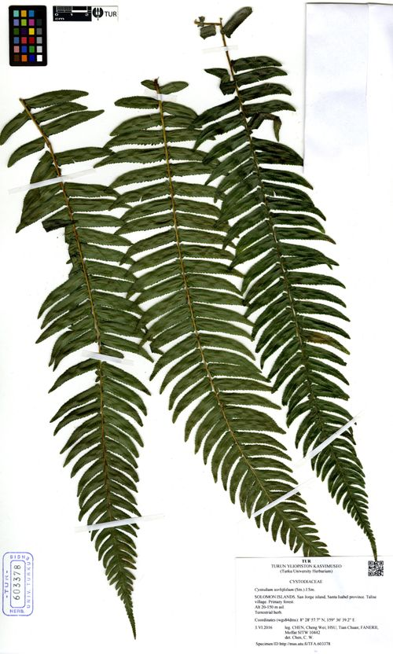

Cystodiaceae
(No common name; often Cystodium Family)
Cystodiaceae is a monotypic family of large terrestrial ferns in the order Polypodiales, containing only the species Cystodium sorbifolium. These ferns have stout, erect or suberect rhizomes bearing broad scales, and large, simply pinnate fronds. They are characterized by their submarginal sori protected by distinctive, deeply cup-shaped or pouch-like indusia opening towards the margin. The family is found in Malesia.
Overview
Cystodiaceae, comprising the single species Cystodium sorbifolium, is another family representing an early diverging lineage within the Polypodiales order. This large fern is native to the Malesian region (including Borneo, Philippines, New Guinea, Solomon Islands), where it typically grows in wet lowland or lower montane rainforests, sometimes forming dense thickets.
Cystodium grows from a stout, erect or suberect rhizome that can form a short trunk and is covered in broad, dark scales. Its fronds are large, reaching up to 3 meters, and are simply pinnate with numerous large, elongated pinnae resembling the leaves of Sorbus (hence the specific epithet sorbifolium).
Like its potential close relatives Saccolomataceae and Lindsaeaceae, Cystodiaceae is homosporous and features sori located near the frond margin. The sori are protected by prominent, firm, cup-shaped or pouch-like indusia that open outwards towards the margin. Its phylogenetic position near the base of the Polypodiales makes it significant for studying the evolution of this major fern group.
Quick Facts
- Scientific Name: Cystodiaceae
- Common Name: No common name; Cystodium Family.
- Number of Genera: 1 (Cystodium)
- Number of Species: 1 (Cystodium sorbifolium)
- Distribution: Malesia (Borneo, Philippines, New Guinea, Solomons).
- Key Features: Terrestrial, stout rhizome/short trunk with broad scales, large 1-pinnate fronds, submarginal sori with cup/pouch-shaped indusia opening outwards, homosporous.
- Evolutionary Group: Polypodiopsida (Leptosporangiate Ferns) - Polypodiales
Key Characteristics
Growth Form and Habit
Large terrestrial ferns with stout, erect or suberect rhizomes, often forming short, thick trunks. Rhizomes bear conspicuous scales.
Fronds (Leaves)
Fronds arise in a cluster from the rhizome apex, are large (up to 3 meters long), and relatively simple in structure.
- Structure: Distinctly 1-pinnate (simply pinnate).
- Pinnae: Pinnae are large, numerous, elongate-lanceolate, stalked, with margins usually serrated, especially towards the apex.
- Texture: Firmly herbaceous to somewhat leathery.
- Vernation: Young fronds show circinate vernation.
- Petioles (Stipes): Long, stout, bearing scales especially at the base.
Fronds are generally monomorphic.
Indument
Rhizomes and petiole bases are covered in conspicuous, broad, dark brown, non-clathrate scales. Fronds are generally glabrous otherwise.
Sori and Indusial Characters
Cystodiaceae are homosporous. Spores are produced in sori located near the frond margin.
- Sorus Position: Sori are submarginal, borne singly at the terminus of veins, near but slightly back from the margin edge.
- Indusium: Each sorus is protected by a distinctive, firm, deeply cup-shaped or pouch-shaped indusium that opens towards the frond margin (extrorse). It is attached at the base and sides.
- Receptacle: Sporangia are attached to a slightly elevated receptacle within the indusium.
Spores
Spores are trilete, tetrahedral, and typically have a smooth or slightly textured surface.
Field Identification
Identifying Cystodiaceae involves recognizing the large, simply pinnate fronds, scaly base, and the characteristic submarginal sori with pouch-like indusia opening outwards.
Primary Identification Features
- Habit: Large terrestrial fern with a stout, scaly rhizome/short trunk.
- Frond Structure: Large and strictly 1-pinnate with numerous large, elongate pinnae.
- Indument: Presence of broad, dark scales on the rhizome and stipe bases.
- Submarginal Sori: Sori located near, but not directly on, the edge of the pinnae.
- Pouch-shaped Indusium: Sori protected by distinctive cup-like or pouch-like indusia opening towards the margin.
- Distribution: Restricted to Malesia.
Common Confusion Points
- Saccolomataceae: Similar pouch-like indusia opening outwards, but Saccoloma typically has more divided fronds (2-4 pinnate) and potentially different scale characteristics.
- Metaxyaceae: Also large, 1-pinnate, scaly ferns in the tropics, but found in the Neotropics and crucially lacks indusia (sori are exindusiate).
- Other large 1-pinnate ferns (e.g., some Blechnaceae, Dryopteridaceae): Differ in soral position (e.g., linear along costa in Blechnum) and/or indusial type (e.g., kidney-shaped in many Dryopteridaceae) or indument.
Field Guide Quick Reference
Look For (Cystodium):
- Large terrestrial fern, stout base
- Fronds strictly 1-pinnate
- Broad dark scales on base
- Submarginal sori
- Pouch/cup-shaped indusium opening outwards
- Malesian distribution
Distinguish From:
- Saccolomataceae (more divided fronds)
- Metaxyaceae (exindusiate sori, Neotropical)
- Other 1-pinnate ferns (sori, indument)
Notable Examples
The family contains only the genus Cystodium with a single species.

Cystodium sorbifolium
(No common name)
The sole species in the family, found in Malesia. It is a large, simply pinnate fern recognized by its stout, scaly rhizome/base and submarginal sori protected by distinctive pouch-like indusia opening towards the margin.
Phylogeny and Classification
Cystodiaceae is placed within the order Polypodiales. Like Lindsaeaceae and Saccolomataceae, it represents an early diverging lineage within this large order. Its precise relationships are still debated, but molecular studies often place it near Saccolomataceae and Lindsaeaceae, potentially forming a small clade with one or both of them near the base of the Polypodiales tree, before the radiation of the major eupolypod groups.
Its distinct morphology, including the simply pinnate fronds (uncommon among related families) and the specific type of sorus and indusium, supports its status as a separate family representing an isolated evolutionary branch.
Position in Plant Phylogeny
- Kingdom: Plantae
- Clade: Tracheophytes (Vascular plants)
- Class: Polypodiopsida (Leptosporangiate ferns)
- Order: Polypodiales
- Family: Cystodiaceae
Evolutionary Significance
Cystodiaceae is important for:
- Basal Polypodiales Relationships: Helps clarify the deep branching patterns and early evolution within the Polypodiales order.
- Morphological Traits: Exhibits a unique combination of features (1-pinnate fronds, scales, specific soral type) among early Polypodiales lineages.
- Malesian Biogeography: Represents a distinct element of the fern flora in the Malesian region.